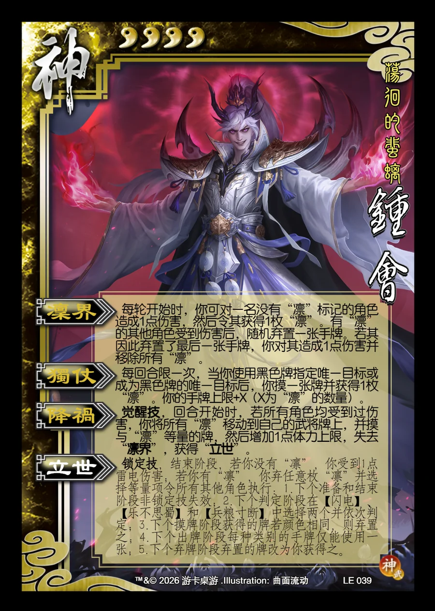

点击卡面查看大图
神
神钟会
♥4荡徊的蜚螭
凛界
每轮开始时，你可对一名没有“凛”标记的角色造成1点伤害，然后令其获得1枚“凛”。有“凛”的其他角色受到伤害后，随机弃置一张手牌。若其因此弃置了最后一张手牌，你对其造成1点伤害并移除所有“凛”。
独仗
每回合限一次，当你使用黑色牌指定唯一目标或成为黑色牌的唯一目标后，你摸一张牌并获得1枚“凛”。你的手牌上限+X（X为“凛”的数量）。
降祸觉醒技
觉醒技，回合开始时，若所有角色均受到过伤害，你将所有“凛”移动到自己的武将牌上，并摸与“凛”等量的牌，然后增加1点体力上限，失去“凛界”，获得“立世”。
立世锁定技衍生
锁定技，结束阶段，若你没有“凛”，你受到1点雷电伤害；若你有“凛”，你弃任意枚“凛”并选择等量项令所有其他角色执行：1.下个准备和结束阶段非锁定技失效；2.下个判定阶段在【闪电】、【乐不思蜀】和【兵粮寸断】中选择两个并依次判定；3.下个摸牌阶段获得的牌若颜色相同，则弃置之；4.下个出牌阶段每种类别的手牌仅能使用一张；5.下个弃牌阶段弃置的牌改为你获得之。